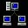

Diablo II Expansion |
 ® ®
Battle.net |
 Proxy* |
Readme |
|
Diablo II Expansion |
®
Battle.net |
 Proxy* |
Readme |
*Some links from the Diablo II Expansion support files, such as this one, will direct you to the Internet.
Windows is a registered trademark of Microsoft Corporation. All rights reserved.
MacOS and Macintosh are registered trademarks of Apple Computer, Inc. All rights reserved.